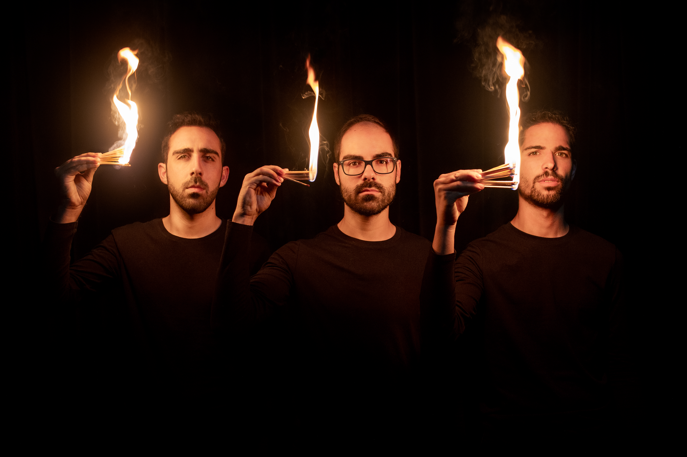
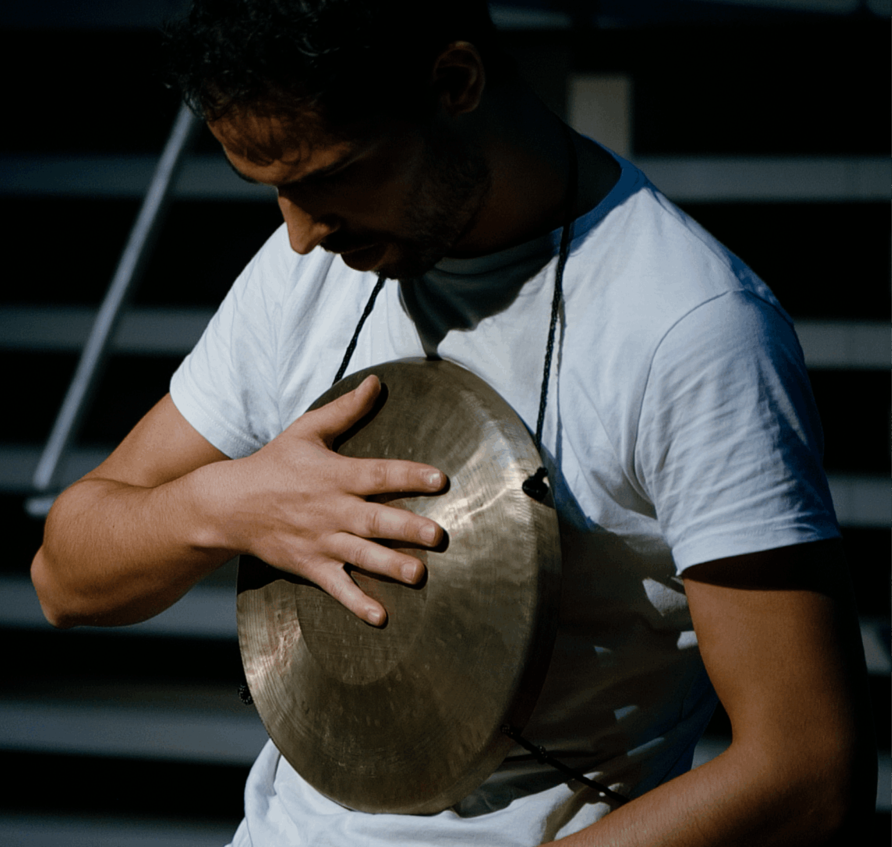
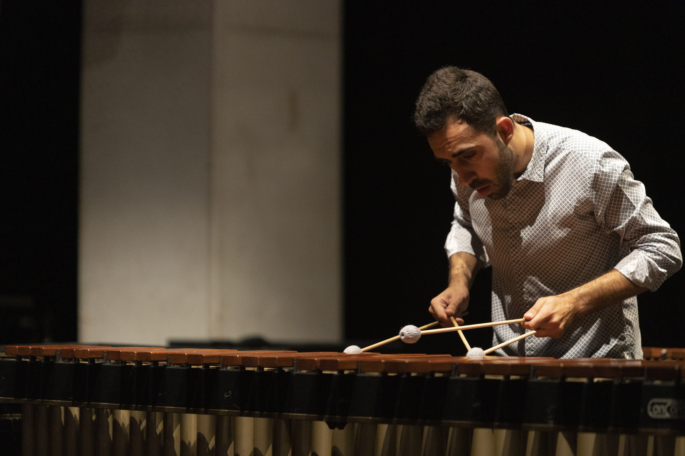

Sobre Nós

RePercussion Trio é um grupo de percussão, criado em 2016, composto por Alexandre Silva, Daniel Araújo e Jorge Pereira. O grupo foca a sua actividade na criação e divulgação da música contemporânea, experimental e performativa para trio de percussão pela colaboração com compositores. Já participou em festivais como o Cistermúsica, Festival Internacional de Música da Póvoa de Varzim e Harmos Festival. A sua princiapal área de atividade tem sido em países como Portugal e Suíça.
Membros

Alexandre Silva
Alexandre Ferreira Silva (n. 1997) é um percussionista e performer profundamente dedicado ao desenvolvimento da música contemporânea. Tem sido reconhecido em vários concursos de prestígio. De salientar o 2º Prémio no Concours Nicati 2023, um 3º lugar no Prémio Jovens Músicos 2019 para Percussão em Portugal, o prémio Helena Sá e Costa 2020, e um notável 1º prémio para Snare Drum no "Festival Internacional Tomarimbando" 2017. Com um portfólio diversificado de experiências, Alexandre tem colaborado e participado com vários festivais e grupos musicais de renome, como o Donaueschinger Musiktage, Darmstädter Ferienkurse, Drumming GP, Orquestra de Câmara Portuguesa, Basel Sinfonieorchester, Dresden Festival Orchestra e Neue Philharmonie München e é também reforço da Orquestra Filarmonia das Beiras. Na temporada 2014/2015 foi selecionado para integrar a Orquestra Portuguesa de Jovens (JOP). Alexandre tem mestrado em performance sob a orientação de Christian Dierstein e um mestrado em Música Contemporânea e Pedagogia na Musik-Akademie Basel. Antes dos seus estudos em Basileia, Alexandre licenciou-se na Escola Superior de Música e Artes do Espetáculo (ESMAE) no Porto, com Miquel Bernat e Manuel Campos.
Daniel Araújo
Daniel Fernando Oliveira Araújo (n.1996), é percussionista formado na Escola Superior de Música e Artes do Espetáculo (ESMAE), tendo obtido o grau de Mestre em Ensino de Música em 2021 após ter concluído a licenciatura em Percussão em 2019 na mesma instituição. Dos vários agrupamentos com quem já colaborou destacam-se a Orquestra Sinfónica do Porto - Casa da Música, Drumming Grupo de Percussão e Banda Sinfónica Portuguesa. Entre 2020 e 2021 integrou a orquestra do circo do Coliseu do Porto AGEAS. Em concursos alcançou os seguintes prémios: Vencedor do prémio Helena Sá e Costa em duo com o percussionista Jorge Pereira (2019); 3º lugar em "Concurso Internacional de Percussão – Gondomar" (2018); Prémio Scherzo Editions – Melhor interpretação da obra obrigatória da compositora residente Ângela da Ponte no "Concurso Internacional de Percussão – Gondomar" (2018); 2° lugar em "Italy Percussive Arts Society - Snare Drum Competition" Cat. B (2017); 3º lugar em "Tomarimbando – Snare Drum competiton" Cat. B (2016). Apresenta-se nos seguintes registos discográficos: Peixinho Patriarca Percussão, Drumming GP, 2021; Night & Day, Banda Sinfónica Portuguesa, 2020; The Ghost Ship, Banda Sinfónica Portuguesa, 2018 Atualmente, é professor de percussão na Academia de Música de Oliveira de Azeméis.

Jorge Pereira
Jorge Pereira (n.1998) realizou a sua formação em percussão na Escola Superior de Música e Artes do Espetáculo (ESMAE), onde obteve o grau de Mestre em ensino de música no ano de 2022, depois de concluir a licenciatura na mesma instituição em 2020, sob orientação dos professores Manuel Campos e Miquel Bernat. Iniciou o seu percurso musical na Filarmónica Severense em 2007 e concluiu em 2016 o Curso Profissional de Instrumentista de Sopros e Percussão no Conservatório de Música da Jobra. Ao longo das suas participações em concursos, foi vencedor em 2019 do Prémio Helena Sá e Costa em Duo, com o percussionista Daniel Araújo e conquistou o 3o lugar no XIII International Competition Paços Premium 2019, Percussion Competition. Enquanto intérprete destaca-se as colaborações com o Drumming GP, Banda Sinfónica Portuguesa, Orquestra Filarmonia das Beiras, MUDA'TE e Foco Musical. Atualmente é professor de percussão no Conservatório de Música da Jobra.
Prémios
- 2025 1º Prémio, Re_Crea@, FestMUS
- 2021 Prémio Jovens Intérpretes no Festival Internacional de Música da Póvoa de Varzim (FIMPV)
- 2017 Prémio melhor espetáculo no Festival SET, atribuído pelo público
- 2027 2º lugar, Categoria Júnior, CIMCA – Concurso Internacional de Música de Câmara da Cidade de Alcobaça
- 2017 Melhor interpretação de obra portuguesa, Categoria Júnior